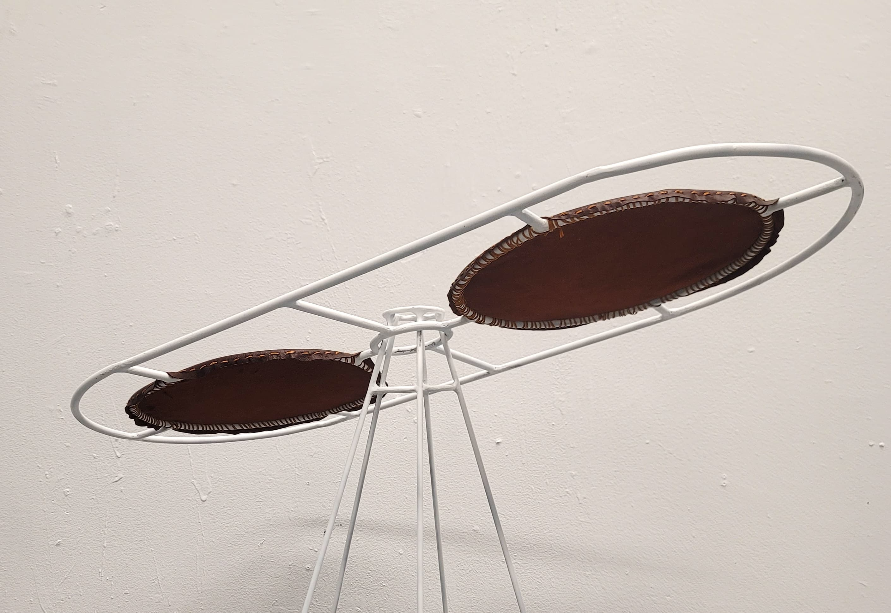

"What does it mean to be invited, yet never truly welcomed?"
The sculptural bench Invited, but not Invited plays with the moment when an object loses its intended functionality. At first glance, the piece appears to be a minimalist, functional bench—sleek, modern, inviting comfort. However, as the viewer attempts to interact with it, the bench wobbles and becomes unstable. This loss of stability renders the bench uncomfortable, questioning the purpose of an object meant to offer rest. The instability creates an uneasy tension, where the object does not fully perform its intended function, shifting the viewer’s relationship with it. This loss of functionality speaks directly to the experience of being invited but not truly welcomed—a feeling that many people experience in both physical and social spaces. An invitation to a seat is extended, but the instability of the bench reflects the awkwardness of inclusion without true belonging. It evokes the idea that sometimes we are physically present, but not fully accepted or comfortable in a space.
